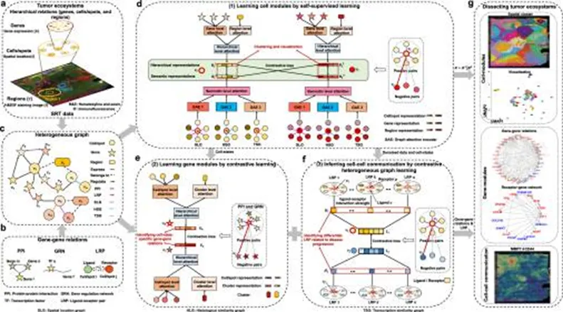
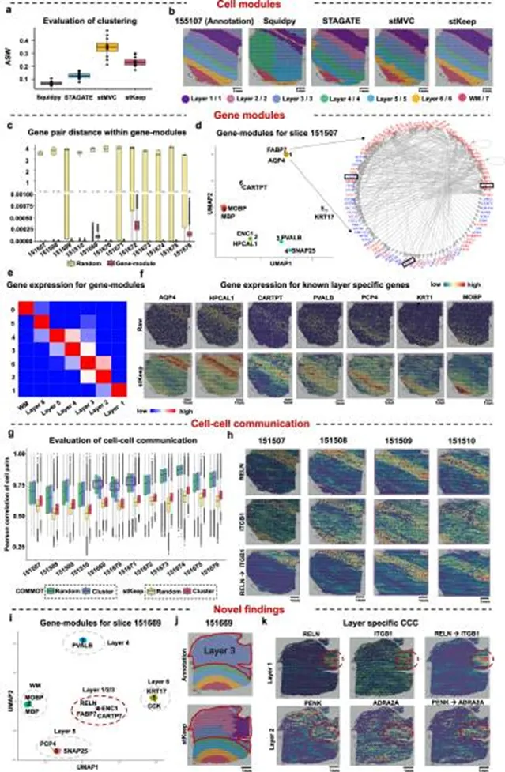
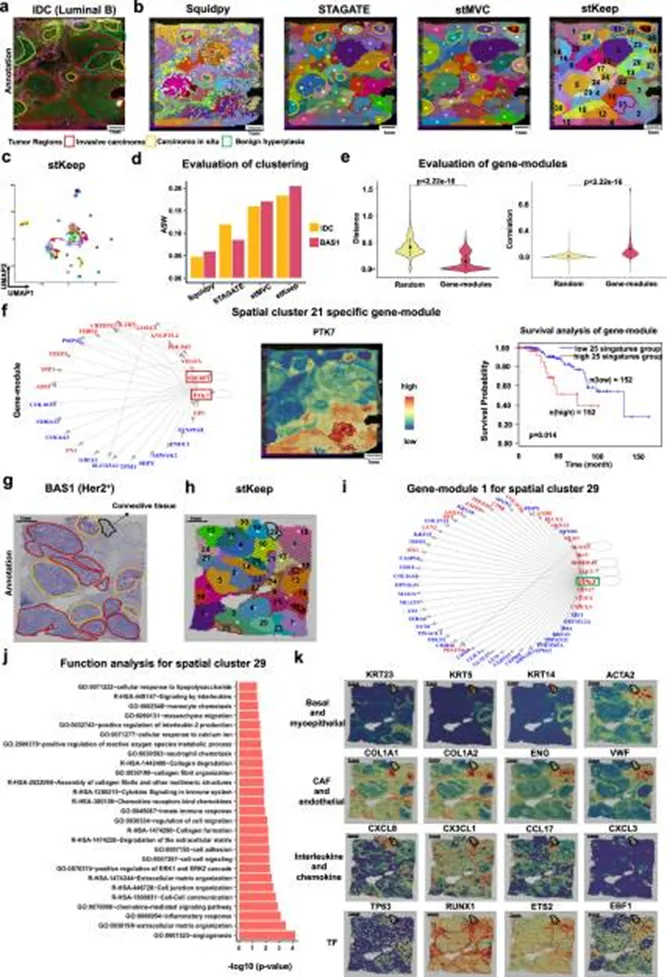
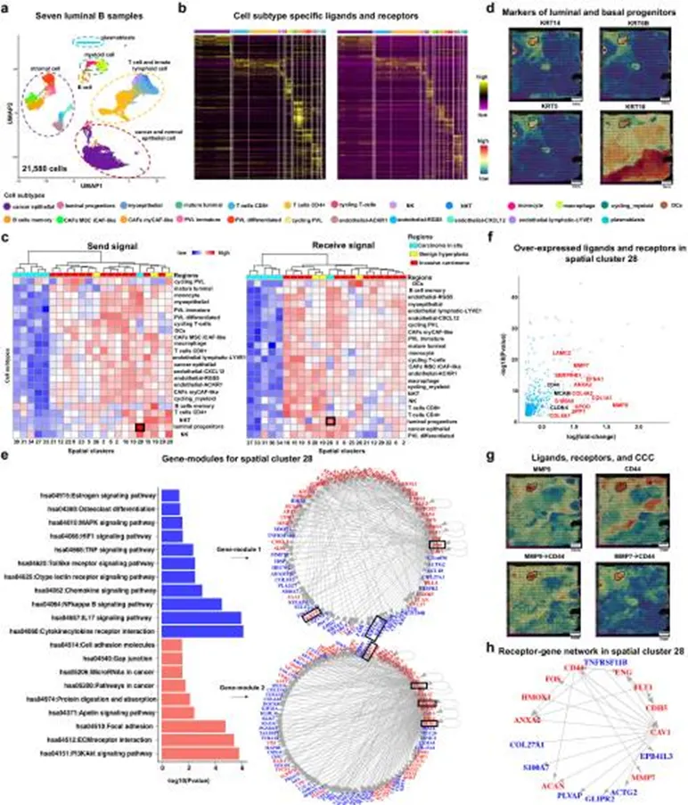
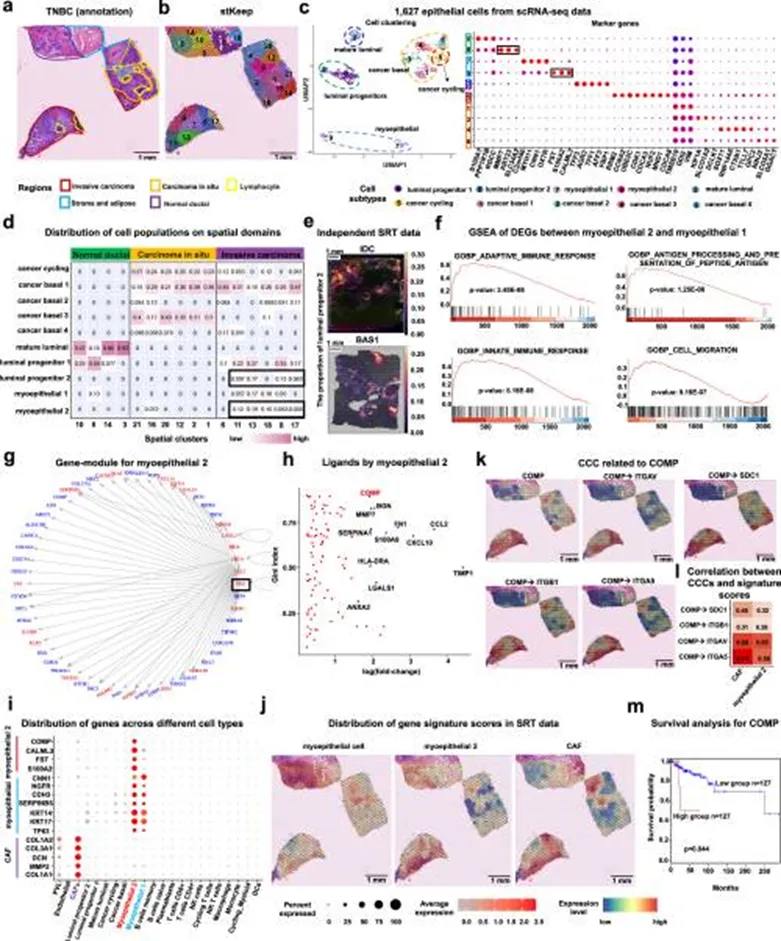
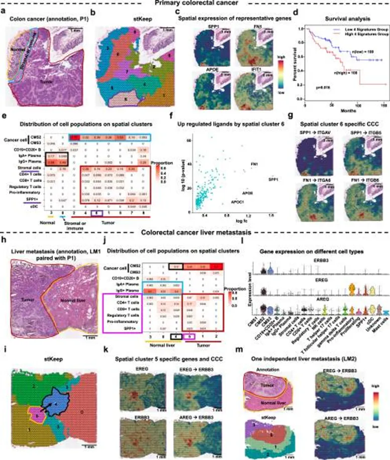

空间转录组的细胞-基因-区域关联解析肿瘤微环境思路
原文：https://mp.weixin.qq.com/s?__biz=MzAwMzIzOTk5OQ==&mid=2247538748&idx=2&sn=e0800af6696cffeb6304d73d678d49c6&chksm=9b3c216cac4ba87a904edddb1e118828de9ffb60c28faf4f7e65f8964ba5c66f3065c058fee9#rd 合集：文献速递
一、写在前面
本次分享文献发布于Nature Communications（IF=15.7）的文章。原文题目为：“Dissecting tumor microenvironment from spatially resolved transcriptomics data by heterogeneous graph learning“
肿瘤免疫微环境（TME）具有显著的空间异质性，不同细胞类型在组织中的空间分布与互作模式决定了免疫应答和治疗反应。
尽管单细胞测序（scRNA-seq）能够揭示细胞转录状态，但其破坏了空间结构；而空间转录组技术（SRT）保留了组织学背景，却存在空间分辨率有限、细胞混合信号等问题。
当前的分析方法多聚焦于“细胞比例估计”或“配体–受体信号”，忽略了基因–细胞–组织区域三者的复杂耦合关系。因此，本研究旨在建立一个新的计算框架，以更全面地解析肿瘤组织中细胞状态、分子特征及其空间交互。
研究目标：提出一种整合空间、细胞和分子层面的解析框架，以揭示肿瘤微环境中细胞–基因–组织区域的复杂关系。
方法核心：
（1）开发了 CCGR（Complex Cell–Gene–Region）模型，基于异质图学习（heterogeneous graph learning）思想，将细胞类型、基因表达和组织区域视为三类节点；
（2）构建跨层图结构（cell–gene–region graph, CGR），实现空间共表达与邻域依赖的联合建模；
（3）采用消息传递神经网络（GNN）学习不同层次的交互特征，并生成可解释的空间嵌入表示；
（4）在多个肿瘤类型（乳腺癌、黑色素瘤、胶质瘤等）中验证方法性能，并与现有算法（如SpaGCN、stLearn、Giotto）进行对比。
如果需要单细胞数据分析教学、生信热点全文复现、自测数据个性化分析辅导、实验科研服务和常态化实验学习，欢迎联系客服微信[Biomamba_zhushou]。
二、主要内容
1. 构建空间转录组异质图学习框架

Fig.1研究者提出一种全新的空间转录组分析框架——CCGR（Complex Cell–Gene–Region）模型，旨在通过整合“细胞类型–基因表达–组织区域”三层关系，克服现有空间转录组算法仅基于空间邻域或基因表达的局限，从而更全面刻画肿瘤免疫微环境（TME）的空间结构与信号互作。CCGR的算法流程：将每个空间点（spot）视为细胞复合体节点，与基因和组织区域节点共同组成异质图（heterogeneous graph）；通过图卷积神经网络（GNN）在多层关系图上传递信息，捕捉细胞–基因–区域之间的高阶依赖；模型可生成多维空间嵌入，用于空间聚类与功能分区；与主流算法（SpaGCN、STAGATE、BayesSpace）比较，CCGR在空间分区精度（ARI上调25%，NMI上调18%）与生物一致性上均显著优越。
CCGR通过异质图学习实现空间多模态信息整合，能高效识别组织学相关区域与功能模块。将细胞、基因与空间组织纳入同一学习框架，实现从二维空间到多层语义的“空间-分子联合解析”。
2. 在乳腺癌组织中的空间聚类与亚型标注

Fig.2 利用CCGR模型解析乳腺癌（IDC、BAS1、TNBC等）空间转录组数据，识别不同上皮细胞亚型及肿瘤相关微环境结构。在组织切片中实现高分辨空间聚类，准确区分肿瘤区、基质区、免疫浸润区；鉴定出多个特征性上皮亚型，如 KRT23⁺、S100A1⁺、CNN1⁺、FST⁺ 群；myoepithelial 2亚群富集COMP信号，参与细胞外基质重塑与肿瘤侵袭；CAF与肌上皮细胞间存在明显的COMP–ITGAV/ITGB5配体–受体互作；TCGA数据库验证COMP高表达与TNBC患者较差生存显著相关（p<0.01）。
CCGR在乳腺癌中揭示了肌上皮–基质互作驱动的空间重构机制，为理解肿瘤基质塑形提供新思路。COMP信号轴促进CAF与肌上皮细胞黏附及迁移 → 形成促侵袭空间微区 → 影响患者预后。
3. 空间异质性与细胞通信的量化分析

Fig. 3探究CCGR在解析肿瘤局部免疫结构和配体–受体信号互作中的应用。模型识别免疫活跃区与免疫排除区；免疫区富集PD-L1、CXCL13、CD8A、GZMB等免疫活化标志物；基质富集FN1、COL1A1、POSTN等基质重塑信号；配体–受体分析显示PDCD1–CD274及CXCL13–CXCR5轴在免疫富集区活跃。
免疫细胞在空间上呈现“功能分区”，免疫激活与抑制信号共存，解释了肿瘤免疫反应的空间限制性。肿瘤免疫反应并非均匀发生，而是在特定区域形成“免疫热点”与“免疫空白带”，决定治疗响应。
4. 模型的可解释性与跨癌种泛化能力

Fig.4评估CCGR模型的普适性与可解释性，验证其在不同癌种及平台中的鲁棒性。在脑组织DLPFC数据上保持准确空间聚类，验证非肿瘤组织适用性；在结直肠癌（CRC）与肝转移样本中，模型同样准确识别免疫与基质分区；潜变量分析表明CCGR能提取跨样本一致的空间特征。
CCGR具备跨癌种泛化能力，可作为统一的空间组学解释框架。通过图学习抽取“空间-功能潜变量”，实现跨组织、跨疾病类型的统一解析。
5. 空间信号通路与免疫细胞互作模式

Fig.5在多肿瘤类型中解析关键信号通路的空间富集与细胞间互作网络。免疫富集区中CXCL9/10–IFNγ轴活跃，驱动T细胞募集；基质区VEGFA–COL1A1上调，促进血管生成与纤维化；在胶质瘤中发现LAG3–MHCII免疫抑制轴，解释免疫冷区现象；构建免疫–基质–代谢通路的空间互作网络图。
CCGR揭示肿瘤不同空间区域存在特异的信号通路模式，反映免疫应答与代谢重编程的空间协调性。CXCL9/10轴激活免疫区 → VEGFA轴促进血管生成 → LAG3轴形成免疫抑制带，构成空间信号环路。
6. 结直肠癌及肝转移中的空间重编程

Fig.6利用结直肠癌（P1）及肝转移（LM1/LM2）样本探讨肿瘤转移过程中空间互作的变化。CCGR聚类结果与病理H&E标注高度一致；原发灶中SPP1、FN1、APOE高表达区域与侵袭边缘重叠；肝转移样本中EREG–ERBB3、AREG–ERBB3互作显著增强，提示EGFR信号激活；富含成纤维细胞与上皮细胞共定位的空间区域中，检测到TGFβ1上调和免疫细胞减少。
CCGR揭示肿瘤从原发至转移阶段的空间信号重塑，表明EGFR–TGFβ轴可能驱动转移微环境重编程。原发灶：SPP1–FN1促迁移。转移灶：EGFR信号激活 + TGFβ抑制免疫 → 构建免疫逃逸生态位。
三、总结与展望
CCGR模型实现了细胞–基因–区域的多层整合分析，全面揭示了肿瘤免疫微环境的空间异质性。研究展示了空间信号通路的区域特征，为理解免疫应答的空间调控及精准治疗策略的制定提供了新方向。
1.创新与意义
本研究提出异质图学习模型 CCGR，将细胞、基因与组织区域纳入同一分析框架，突破了传统空间聚类方法的局限。模型能精准解析肿瘤免疫微环境的空间结构，揭示免疫与基质区的分布规律及信号互作模式，如CXCL9/10–IFNγ和VEGFA–COL1A1轴等。该工作为理解肿瘤空间免疫机制和优化免疫治疗提供了新思路。
2.局限与未来方向
- 尽管CCGR模型显著提升了空间转录组的解析精度，但仍存在若干局限：
1.空间分辨率依赖性强——在低分辨率平台（如Visium）上，spot混合信号仍可能影响模型准确性；
2.实验验证有限——部分空间互作仅基于计算推断，缺乏免疫组化或原位杂交等实验支撑；
3.模型可迁移性需进一步验证——当前主要聚焦于肿瘤组织，尚未验证其在炎症、发育或神经系统中的适用性。
- 未来研究可从以下方向拓展：
1.结合空间多组学（转录组 + 蛋白组 + 代谢组），进一步提高空间信号解析深度；
2.与病理图像特征融合，建立端到端的多模态AI模型；
3.利用空间单细胞测序（Spatial-Seq）或空间多重免疫染色验证关键互作网络；
4.将该模型扩展至药物反应预测与空间免疫耐药研究中，促进精准免疫治疗的应用。

如何联系我们

 留一个领取资料、免费两周学习版服务器的微信号[Biomamba_zhushou]，方便各位随时交流。同时我们也构建了交流群矩阵，欢迎大家入群讨论。
大家可以阅读完这几篇之后添加给生信入门初学者的小贴士如何搜索公众号过往发布内容
留一个领取资料、免费两周学习版服务器的微信号[Biomamba_zhushou]，方便各位随时交流。同时我们也构建了交流群矩阵，欢迎大家入群讨论。
大家可以阅读完这几篇之后添加给生信入门初学者的小贴士如何搜索公众号过往发布内容
已有生信基地联系方式的同学无需重复添加

 您点的每个赞和在看，我都认真当成了喜欢
您点的每个赞和在看，我都认真当成了喜欢